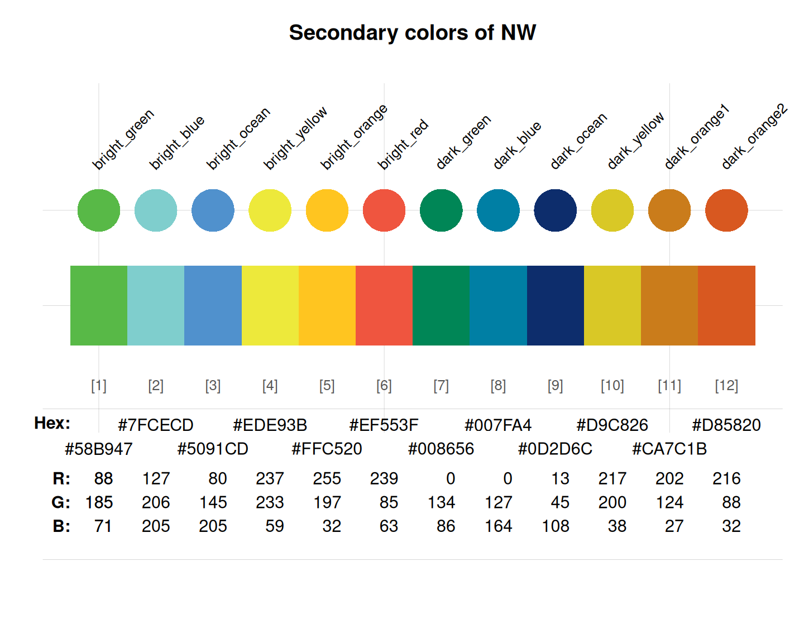

northwestern_2 provides the 12 secondary colors
of the Northwestern University, USA.
Source
Color definitions are based on the Color manual.
Details
The secondary colors should be used rarely and sparingly. Under no circumstances should any of them become the predominant color for a school, center, institute or department.
These colors are
"bright_green" (defined as CMYK 68,00,100,00, RGB 88,185,71, HEX #58B947),
"bright_blue" (defined as CMYK 48/00/22/00, RGB 127/206/205, HEX #7FCECD),
"bright_ocean" (defined as CMYK 68/34/00/00, RGB 80/145/205, HEX #5091CD),
"bright_yellow" (defined as CMYK 10/00/89/00, RGB 237/233/59, HEX #EDE93B),
"bright_orange" (defined as CMYK 00/23/95/00, RGB 255/197/32, HEX #FFC520),
"bright_red" (defined as CMYK 01/82/80/00, RGB 239/085/063, HEX #EF553F),
"dark_green" (defined as CMYK 87/24/83/09, RGB 000/134/086, HEX #008656),
"dark_blue" (defined as CMYK 86/39/23/01, RGB 000/127/164, HEX #007FA4),
"dark_ocean" (defined as CMYK 100/85/05/36, RGB 013/045/108, HEX #0D2D6C),
"dark_yellow" (defined as CMYK 18/14/100/0, RGB 217/200/038, HEX #D9C826),
"dark_orange1" (defined as CMYK 00/48/97/21, RGB 202/124/027, HEX #CA7C1B), and
"dark_orange2" (defined as CMYK 02/77/100/09, RGB 216/088/032, HEX #D85820.
See also
northwestern_1 for primary colors of Northwestern University;
seecol for viewing and comparing color palettes;
usecol for using color palettes;
simcol for finding similar colors;
newpal for defining new color palettes;
grepal for finding named colors.
Other U.S. university color palettes:
CMU_1_core,
CMU_2_tartan,
CMU_3_campus,
UCLA_1,
UCLA_2,
UCLA_3,
UCLA_4,
UCSD_1,
UCSD_2,
UCSD_3,
asu_1,
asu_2,
asu_3,
berkeley_1,
berkeley_2,
brown_1,
brown_2,
bu,
caltech_1,
caltech_2,
caltech_3,
columbia,
cornell_1,
cornell_2,
cornell_3_accent,
dartmouth_1,
dartmouth_2,
dartmouth_3,
duke_1,
duke_2,
harvard_1,
harvard_2,
harvard_3,
jhu_0,
jhu_1,
jhu_2,
jhu_3_accent,
jhu_4_gray,
manchester_uni_1,
manchester_uni_accent,
michigan_1,
michigan_2,
minnesotatwin_1,
minnesotatwin_2,
mit,
monash_1,
monash_2,
msu,
northwestern_1,
notredame_1,
notredame_2,
nyu_1,
nyu_2,
nyu_accent,
nyu_neutral,
ohio_uni_1,
ohio_uni_2,
pitt_1,
pitt_2,
princeton_0,
princeton_1,
princeton_2,
rpi_1,
rpi_2,
rpi_3,
stanford_1,
stanford_2_accent,
stanford_3_web,
uchicago_1,
uchicago_2,
uci_1,
uci_2,
uci_3,
uci_4,
uflorida_1,
uflorida_2,
uflorida_3,
umass_1,
umass_2,
umass_neutrals,
upenn_1,
upenn_2,
vanderbilt_1,
vanderbilt_2,
vanderbilt_3,
willamette,
wm_1,
wm_2,
wm_3,
yale,
yeshiva
Examples
northwestern_2
#> bright_green bright_blue bright_ocean bright_yellow bright_orange
#> "#58B947" "#7FCECD" "#5091CD" "#EDE93B" "#FFC520"
#> bright_red dark_green dark_blue dark_ocean dark_yellow
#> "#EF553F" "#008656" "#007FA4" "#0D2D6C" "#D9C826"
#> dark_orange1 dark_orange2
#> "#CA7C1B" "#D85820"
unikn::seecol(northwestern_2, main = "Secondary colors of NW") # view color palette
